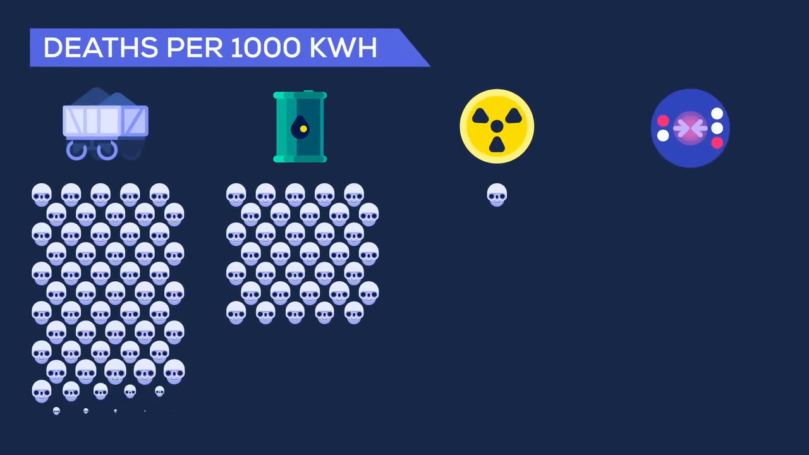

Notes
(0.00)
The lecture begins by emphasizing that energy is the fundamental currency of our universe, powering our homes, food, and computers. We can obtain energy through various means, including burning fossil fuels, splitting atoms, or harnessing sunlight. However, each method has its drawbacks, such as toxicity, nuclear waste, and limitations in battery storage.
(14.92)
The speaker then turns to the sun, which seems to have virtually limitless free energy. The sun's energy is generated through nuclear fusion, a thermonuclear process that involves incredibly hot temperatures, making a plasma where nuclei and electrons bounce around freely. The nuclei are positively charged, repelling each other, but the particles must be moving at extremely high speeds to overcome this repulsion.
(39.76)
Stars cheat by being massive, with pressure in their cores generating the heat needed to squeeze nuclei together until they merge and fuse, releasing energy in the process. Scientists hope to harness this energy release in a new generation of power plants, known as fusion reactors. On Earth, it's not feasible to use the brute force method to create fusion, so scientists have developed two ways to make plasma hot enough to fuse.
(112.12)
The first type of reactor uses a magnetic field to squeeze a plasma in a donut-shaped chamber, where the reactions take place. These magnetic confinement reactors, such as the ITER reactor in France, use superconducting electromagnets cooled to within a few degrees of absolute zero. The second type, called inertial confinement, uses pulses from superpower lasers to heat the surface of a pellet of fuel, imploding it and briefly making the fuel hot and dense enough to fuse.
(140.32)
The speaker notes that scientists have achieved fusion, but it currently costs more energy to do the experiment than they produce in fusion. The technology has a long way to go before it's commercially viable, and it might never be. However, if it gets there, it would be so efficient that a single glass of seawater could be used to produce as much energy as burning a barrel of oil with no waste.
(180.48)
The speaker discusses the potential fuel sources for fusion reactors, including hydrogen and helium. Deuterium, a stable isotope of hydrogen, can be found in abundance in seawater, but tritium, a radioactive isotope, is more challenging to obtain. Helium 3, an isotope of helium, might be a suitable substitute, but it's incredibly rare on Earth.
(240.68)
The speaker suggests that the moon might hold the answer to obtaining helium 3, which could be mined from the lunar dust. This could provide enough fuel to power the entire world for thousands of years, making it a compelling argument for establishing a moon base.
(279.32)
The speaker addresses concerns about the safety of fusion reactors, noting that they would be much safer than traditional power plants. If the confinement failed, the plasma would expand and cool, stopping the reaction. The release of radioactive fuel like tritium could pose a threat to the environment, but the amount used at a given time is limited, making it quickly diluted.

(323.88)
The speaker concludes by noting that the main drawback of fusion power is its unproven technology, making it a $10 billion gamble. While the potential payoff is unlimited clean energy for everyone, it's unclear whether the technology will be commercially viable. The speaker leaves the audience with a question: is it worth the risk
?
Takeaways
- The fundamental currency of the universe is energy.
- Fossil fuels are extremely toxic, and nuclear waste is a significant issue.
- Solar energy has limitations, as it is not feasible to store sunlight for cloudy days.
- Nuclear fusion is a process that releases energy by combining atomic nuclei, and it is the source of energy for stars.
- Scientists are working on developing fusion reactors, with two main approaches: magnetic confinement and inertial confinement.
- Fusion reactors would use hydrogen or helium as fuel, and seawater is a potential source of hydrogen.
- Deuterium is a stable isotope of hydrogen that can be found in seawater, but tritium is a radioactive and rare isotope that is difficult to obtain.
- Helium 3 is another potential fuel source, but it is rare on Earth and may be found in abundance on the Moon.
- Fusion reactors are considered safer than traditional nuclear power plants, as they cannot melt down or release large amounts of radioactive material.
- The main challenge to developing fusion power is the high cost and unproven technology, which may make it difficult to achieve commercial viability.
Glossary
- Fusion: A thermonuclear process where the ingredients have to be incredibly hot, so hot that the atoms are stripped of their electrons, making a plasma where nuclei and electrons bounce around freely.
- Plasma: A state of matter where the atoms are stripped of their electrons, making a gas-like substance.
- Nuclear fusion: A process where two or more atomic nuclei combine to form a single, heavier nucleus, releasing energy in the process.
- Magnetic confinement: A method of containing a plasma in a donut-shaped chamber using magnetic fields.
- Inertial confinement: A method of heating the surface of a pellet of fuel using pulses from super-powerful lasers, imploding it, and briefly making the fuel hot and dense enough to fuse.
- ITER reactor: A magnetic confinement reactor being built in France that uses superconducting electromagnets to contain a plasma.
- Deuterium: A stable isotope of hydrogen with an extra neutron that is needed for nuclear fusion reactions.
- Tritium: A radioactive isotope of hydrogen that is needed for nuclear fusion reactions and is difficult to obtain.
- Helium 3: A rare isotope of helium that could be used as a substitute for tritium in nuclear fusion reactions.
- Soda wind: A hypothetical process that could have built up huge deposits of helium 3 on the moon over billions of years.
- Fusion reactor: A device that generates energy by harnessing the energy released from nuclear fusion reactions.
- Nuclear waste: Waste produced by nuclear power plants that can be hazardous to the environment.
- Thermonuclear process: A process that involves extremely high temperatures, typically millions of degrees, to achieve nuclear reactions.
- Superconducting electromagnets: Electromagnets that can operate at very low temperatures, near absolute zero, and are used in magnetic confinement reactors.
- National Ignition Facility: A facility in the US that uses super-powerful lasers to heat the surface of a pellet of fuel and achieve nuclear fusion reactions.
- Commercially viable: A technology that is economically viable and can be used to generate profit.
- Radioactive fuel: Fuel that emits radiation and can be hazardous to the environment if not handled properly.
- Patreon.com: A platform that allows creators to earn money from their work by receiving support from their fans.